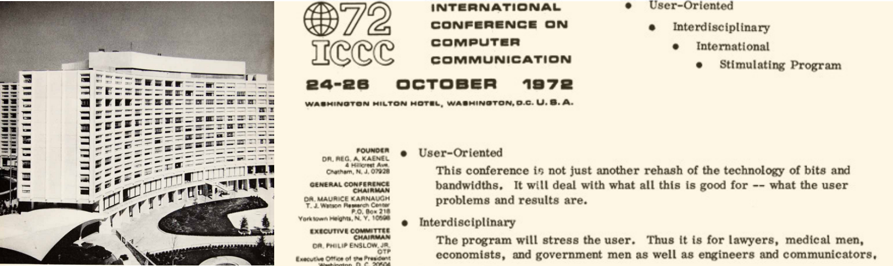
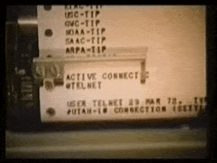
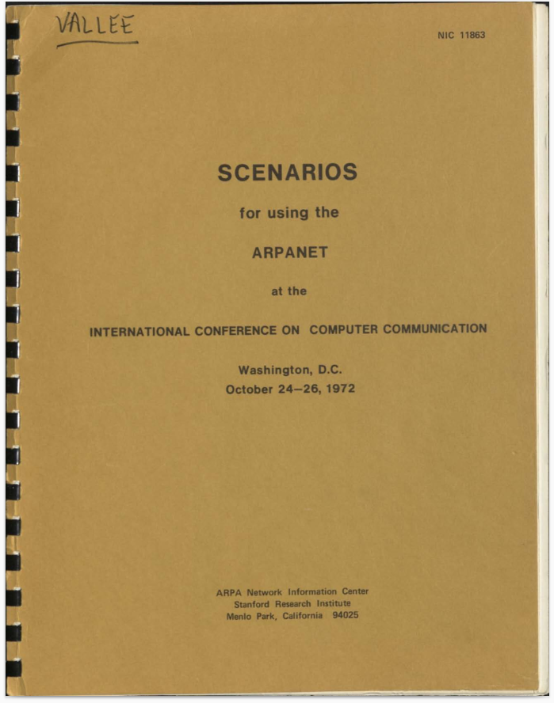
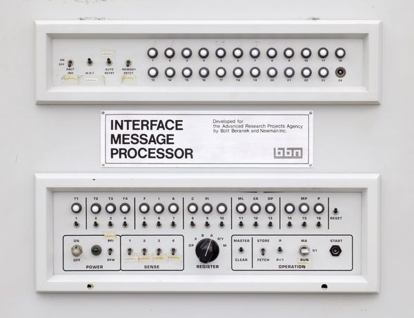
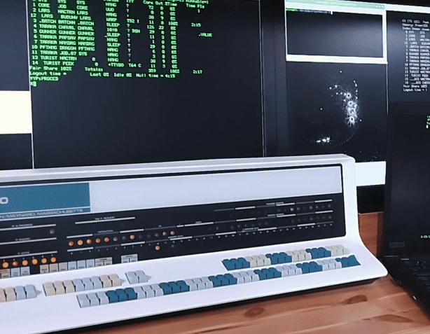
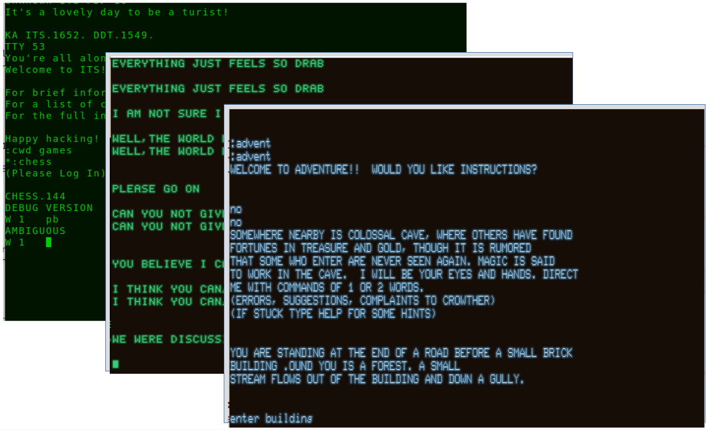
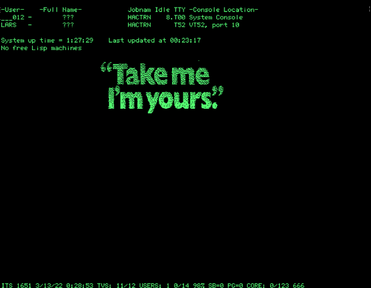

Interactive map of the 1973 Arpanet
Hover over the nodes for their detailed subpages.
The colored nodes played a role in the Scenarios for the 1972 Arpanet Ball described below.
Green nodes: accessible in the reconstruction;
yellow nodes: expected online soon;
red ones: will take longer to reconstruct.
The 1972 Arpanet Ball
The Arpanet. At first, not many people cared. The break-through came at the 1972 ICCC convention, known as the 'Arpanet Ball'. Attendees could get online, and were given a booklet with 'scenarios' to try for themselves.
No exaggeration - at the Arpanet Ball, the consequences of 'networking' suddenly became clear. After the event, it was widely understood that this would change the world. That helped the Arpanet grow explosively in its early years. Click below for an animation, or read more: here, and here.
See the Arpanet expand from 1969 to 1976
It is not completely fair - not at all fair - to attribute the explosive growth in 1973 to just the Arpanet Ball, which happened in October 1972. But the Arpanet's node count explosion in 1973 was accompanied by a wave of broad enthusiasm about networking. And that most definitely did start at the Ball.
Growth in the number of nodes flattened off after 1975. After six years of development, the network was no longer best suited to management by an agency with the charter to sponsor advanced research, and thus network management was transferred to the Defense Communications Agency.
Growth in the number of nodes flattened off after 1975. After six years of development, the network was no longer best suited to management by an agency with the charter to sponsor advanced research, and thus network management was transferred to the Defense Communications Agency.
So, it is interesting (actually, historically important!) to find out what exactly people saw at the event. Here is the invitation letter. Promising that the program will 'stress the user':


Attendees must have experienced more than just stress - what triggered them to see the networked future? It certainly was not websites, those only came in 1989. In late 1972, even email was less than 12 months old, and interestingly: that's not even one of the example Scenarios attendees could try out. Instead, people were shown how to use local mail on MIT's ITS systems.
But, attendees could log themselves in on clunky Teletypes or very basic CRT terminals; they then could connect to the various computers on Arpanet and 'do things'. What things? That is why we recreated the Arpanet circa 1972-1973, and let you go through the example 'Scenarios' yourself.
The Scenarios
At the 1972 convention, a booklet was given to attendees. It contained step-by-step instructions to try interesting things on the Arpanet. Each 'Scenario' gave a short tour through one of the nodes that joined in on the effort.

Try it. Log in on an Arpanet Terminal and teleport back to 1972
Pretend you are an attendee at the 1972 ICCC convention. There were dozens of terminals, so pull up a chair and pick one of the free (green) terminals below. Take your pick: a clunky Teletype, rattling along (we include the audio, and mercifully, a mute button) as it prints its output on virtual paper. Or one of the new, fancy DEC VT05 terminals. To which you still had to get used in 1972, just so you know.
Bring your own IMP: Become part of the network
We added extra 'leased line' sockets on a soe Arpanet IMPs. These let you hook up your own, local, IMP replica to become part of the network. Not too hard, and then attach your PiDP-10 or even PiDP-11/8/1 replica to your IMP. Or a Linux machine - if like the MIT ITS team, you do not believe in security.


Thanks to the self-organizing technology of the Arpanet IMPs, it only takes half a minute for your IMP's presence to be propagated through the network. And cut the cables whenever you want, no problem.
Connect your IMP & PiDP replicas
Use your own (replica) Terminal
We have an array of excellent terminal simulators that will bring you on the Arpanet in a much more stylish and comfortable manner.
In fact, you can hook up a real serial terminal, if you have one.


Some of the terminal emulators available: VT-100, VT-52, Datapoint, IMLAC, Tektronix. Or, plug in your Knight TV terminal as if you were a student at MIT's 545 Tech Square. Why stay stuck at the Washington Hilton.
Connect your own terminal